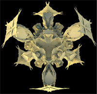
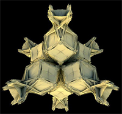
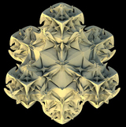
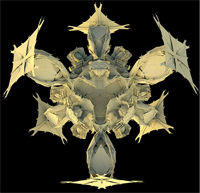
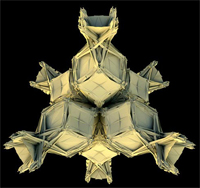
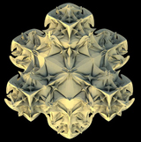

MAT 594CM S2009
Angus Forbes & Wesley Smith, Instructors
 





This course provides a foundation for computing in multidimensional spaces, investigating the synthetic and generative potentials of elementary geometric constructs. Subjects covered will include vector and matrix math, space partitioning, collision detection, and kinematics. We will focus both on mathematical foundations and practical computational techniques for creating real-time 3D graphics via OpenGL.
Students will produce a number of investigations into the topics covered, culminating in a final programming project. No prerequisites are required, although some basic knowledge of programming is assumed. The course will consist of one lecture class and one lab class per week.
Week 1: Space Math
How to project a 3D space on a 2D plane.
Navigating a 3D space.
Topics: Introduction to openGL, vectors, matrices, homogenous coordinates, transformations, perspective, virtual cameras.
Lecture notes: [slides.pdf] [slides.ppt]
Example code: [ModelviewDemo.pde] [ProjectionDemo.pde]
Links: [] [] []
http://en.wikipedia.org/wiki/Affine_transformation
Week 2: Thinking in Plane
How to reason efficiently about objects in 2D space.
Algorithms for bounding, intersecting, and partitioning simple polygons.
Topics: Determinants, the dot product, convex hull algorithms, voronoi diagrams and delaunay triangulation.
Lecture notes: [slides.pdf] [slides.ppt]
Example code: [FortuneVoronoi.pde] [ConvexHull_1.pde] [ConvexHull_2.pde] [Triangulate.pde]
Links: [] [] []
Topics: Parametric curves, Bezier curves, Cubic Splines, NURBS Curves, animation over curves.
[Problem Set #1] due Thursday
Parametric surfaces, subdivision surfaces.
Example Code:
Collision detection, BSP, 3D Vornoi, 3D Convex Hull
[Project #1] due Thursday
Rotation matrices, Euler angles, axis-angle, quaternions, interpolation
Vector fields, dynamics
[Research Presentation] fist half of Thursday's class
Navier-Stokes, water simulation, smoke simulation, solving linear systems of equations, numerical methods to approximate partial differential equations.
Introduction to GLSL, per-pixel light models
[Project #2] presentations Thursday
matrices - 3x3 as a vector space - 4x4 as a homogenous vector space - how to construct orthogonal vector spaces - conditions under which transpose == inverse and it's application in graphics - e.g. gl_ModelViewMatrix == gl_NormalMatrix when scale is (1., 1., 1.) - billboarding vectors - normalized - how to handle the edge cases where magnitde ~ precision of float type - cross product/dot product/geometric product - meaning and usefulness - sphere/ray intersection - 3D picking - how to stroke a path (defined in 2d, ambiguous in 3d) composing vector fields - gravity - planetary - magentic - vortex - stochastic - perlin noise - gaussian - ... - emitters - point - spherical - cube - line - integration techniques - discrete calculus - euler (explicit/implicit) - R-K - verlet - when/where to apply - steering behaviors - gotchas - singularities at distance == 0 (causes divide by 0) - use an epsilon factor to compensate neighborhoods of points - nearest neighbor - quantized grids - brute force - DT/VD - meaning of proximity shifted from nearest neighbor - computational aspect - how it is constructed - how it encodes information
W1 Graphics OpenGL + Matrices - ANGUS Lab OpenGL, introduction to spatial issues W2 Intro to Computational Geometry in 2D - ANGUS Lab Convex Hull, Neighborhood connectivity, Voronoi/Delaunay How to divide up space, how things intersect, nearest neighbors W3 2D continued (Ways of using them) - ANGUS Lab extracting information from Voronoi/Delaunay W4 Dynamics: How to Move through Space 3D - WES Lab Interpolation, numerical methods (integration) Research exercise from w4 to w6 W5 Move Through Space Continued 3D - ANGUS Lab vector fields, sampling W6 Rotation/Orientation - WES Lab Rotation Matrices, Euler angles W7 Rotation/Orientation (Continued) - WES Lab axis-angle, quaternions W8 How to InterPolate Rotation/Orientation - WES Lab slerp, orientation in time W9 Surfaces - ANGUS Lab mathematical surfaces, isosurfaces W10 Collisions - WES Lab collisions in 3D, agents, … W11 Final Project at the end